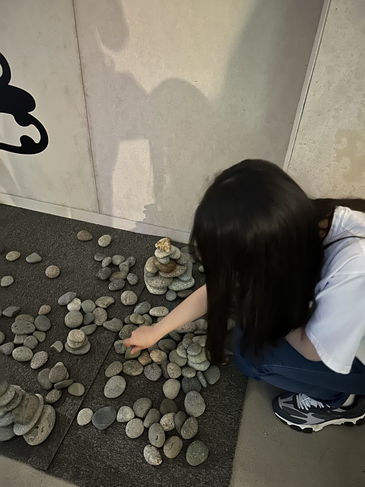

행복모음집은 행복을 찾는 방법과 저의 행복했던 일들을 모은 웹페이지입니다.
행복모음집은 크게 행복제작법과 행복모음집의 메뉴로 나누어지는데
행복제작법은 우정, 사랑, 절약 등의 가치들로부터 행복을 얻는 법에 대한 것을 담고 있고,
행복모음집은 제가 경험했던 행복들을 담고 있습니다.
행복모음집 곳곳을 구경하며 여러 행복을 발견하며 힐링의 시간을 가지셨으면 좋겠습니다.
또한 본인의 행복에 대해 고민하며 진정한 행복을 찾을 수 있는 계기가 되길 바랍니다.
|  |
김다정
서울여자대학교 23학번
언론영상학부
웹페이지저작기초 수강 중
|
뉴스를 틀면 살인, 상해, 절도, 사기, 사이버 불링 등 부정적인 기사가 많이 쏟아집니다.
또한 현실에서도 입시, 취직 등 여러 문제에 시달리며 부정적인 감정을 느끼는 사람들이 많습니다.
이러한 문제들로 인해 사람들은 행복을 찾는 데에 어려움을 느끼게 된다고 생각했습니다.
이 웹사이트를 통해서 행복은 생각보다 가까이 있다는 것을 깨닫고,
주위에 있는 세잎 클로버들을 얻기를 바라는 마음으로 이 웹사이트를 제작하게 되었습니다.
행복제작법은 사랑제작법, 우정제작법, 절약제작법, 행복제작법의 카테코리로 나누어집니다.
모두 다 천천히 읽어보시면서 자신의 행복이 무엇인지, 무엇으로 만들어지는지 고민해보는 시간을 가지시면 됩니다.
행복모음집은 저의 행복을 담은 사진들을 모은 앨범인데요.
사진을 클릭하시면 그 사진에 대한 설명들이 나옵니다.
하나하나 클릭하면서 구경해주시면 됩니다.